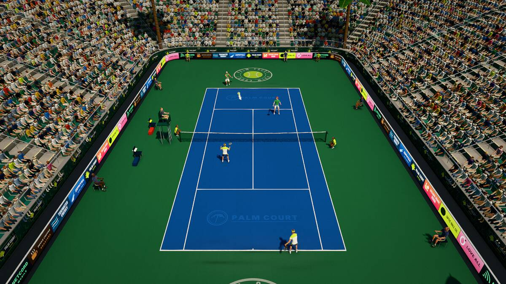

Key takeaways
- Doubles is mostly played at the net. The aim is to get both players forward, with a good ball to get you there.
- Move as a pair: up and back together, side to side together, so there are never big gaps.
- Serve and return cross-court and through the middle. The middle is the best target, because it has no alley and creates doubt about who takes it.
- Agree on signals and calls before the match: who takes the middle ball, when to poach, and what to do on a lob.
The court and the rules that change
The doubles court is 10.97 metres wide, 2.74 metres wider than the singles court, which adds an alley down each side. The alleys are in play for rallies but not for the serve: a serve must still land in the same diagonal service box as in singles. The scoring is the same as in singles.
Two rules about order are worth knowing, because mistakes cause arguments:
- Serving. A team serves a whole game, and the partners take turns, in the same order for the whole set. If Ana and Ben play Cal and Dee, and Ana serves the first game, then Cal serves the second, Ben the third and Dee the fourth, and the cycle repeats. The order can be changed between sets.
- Receiving. Before the set, each receiving team decides who will take the serves in the right-hand (deuce) court and who in the left-hand (ad) court. They keep to it for the whole set. A serve that touches the receiver's partner before it bounces is the server's point.
The scoreboard rules, including the way a tiebreak works, are in the scoreboard article. In a tiebreak the serve passes through all four players in turn.
Starting positions
The usual formation is one up, one back. The server stands behind the baseline, and the server's partner stands at the net, on the other half of the court, roughly two or three metres from the net. The receiver stands around the baseline, and the receiver's partner stands near the service line, on the half of the court opposite the receiver. After the return, both teams try to get into the best formation:
- Two up. Both players at the net. It is the most aggressive formation and the one most teams want to reach, because the angles are sharp and the opponents have little time. Its weakness is the lob, so be ready to retreat or switch.
- Two back. Both players near the baseline. It is a defensive formation for when you are under pressure, and the way out is to get one player forward as soon as you play a good ball.
- Special serving set-ups. In the Australian formation the server and the net player stand on the same side of the court, which changes the angles for the return. In the I-formation the net player crouches near the centre line in front of the server. They are surprise tools, not a first choice, and both need signals.
Serving in doubles
A good first serve matters even more than in singles, because the net player can pounce on a weak second ball. Aim at the T, the corner near the centre line. A serve to the T limits the angles open to the receiver and helps your partner at the net to guess where the return will go. A body serve can jam the receiver, and a wide serve opens the court, which gives the receiver a big angle to hit across. Decide with your partner whether you will follow the serve in or stay back, and make sure the other one knows.
Returning serve
The receiver's job is the same as in singles, to get the ball back in play, but with a net player to avoid. The best returns are:
- Cross-court and low, at the server's feet. If the server follows the serve forward, a ball at their feet is a half volley, which is hard to play.
- Down the middle, between the two opponents. The ball has no alley to run out into, and it can make the pair hesitate.
- A lob over the net player, especially if they like to poach. A good one wins the point.
- Down the line past a net player who leans towards the middle. It is risky, but when you do it now and then, the net player has to stay home.
The receiver's partner has an important job too: stay balanced, watch the net player for the signal, and be ready to move into the net behind a good return.
Net play and poaching
A poach is when the net player crosses into the middle to volley a return meant for their partner. Done well, it wins the point and puts doubt in the minds of the opposition. It also takes judgement:
- Poach when the return is predictable, such as a cross-court ball you can see coming. Move as the receiver starts to swing, not before.
- Fake a poach now and then. The receiver has to keep checking over the shoulder, and mistakes follow.
- Agree on a code with your partner, such as hand signals behind the back before each serve, so the server knows whether to cover the middle or the other side.
- If you poach and miss, your partner must cover the gap you left. Tell them, so they are ready.
When you are not poaching, hold the net. Do not back away as the ball comes, because retreating is how teams lose the point. The volley technique is in the volley article.
Moving as a pair
Think of two players tied together by a short rope. When one moves forward, the other follows. When the ball goes to one side, both slide across towards it, so the court is covered and nobody is left alone. Common patterns:
- Up and back together. If one player is lobbed and has to run back, the other moves back with them, or the pair swaps sides.
- Side to side together. When the ball is on one side, both partners slide towards that side, so the gap between them stays small.
- The switch. When a lob goes over the net player, the player at the baseline can take it, or the net player runs back, calls "switch", and their partner slides across to cover the empty side. They have swapped sides, and they stay swapped until the point is over.
The middle ball and communication
The ball down the middle is the one that causes the most trouble, because each partner may leave it to the other. Settle it before the match. A common convention is that the player whose forehand is nearer the middle takes it, but the rule matters less than the habit. Call "mine" or "yours" early and loudly, and always call one of them. If neither partner calls, the ball is lost. Other useful calls are "bounce" (let it bounce), "out" (it is going out), "switch" and "stay", plus a word of encouragement after every error. A word of encouragement after an error costs nothing and keeps your partner playing freely.
Common mistakes
- Both players at the baseline. You give the opponents the net and the initiative. Get one player forward.
- Hitting to the net player. Aim for the gap, the feet or over their head.
- Standing too close to the net, which makes you an easy lob target. Keep a couple of strides back.
- Moving separately, leaving big gaps between you. Keep the rope short.
- Silence. No calls, no signals, and lots of balls in the middle that nobody hits.
- A weak first serve. The server's partner is the one who suffers, so serve in.
Drills
- Two-on-one volley rallies. Both players at the net against one at the baseline, practising firm volleys into the gaps.
- Poach practice. The server's partner moves on a signal and finishes with a volley, while the server covers the other side.
- Lob and switch. A coach lobs over one player, who calls "switch" and runs back while the partner slides across.
- Serve-and-return points. Play points that begin with the serve and the return, with the teams in the usual positions, and score them.
- Middle-ball game. Play points where the only winning target is the middle, to practise the calls.
Try it in Palm Court
Doubles is in the game, on the wider court, with the real rules for serving order and the serve box. In Play, Training, Quick Match vs CPU, set the match type to Doubles in Match setup (it is also a setting under Settings, Gameplay): you and a CPU partner play two CPU opponents. At the start of each point the game places the players as in the picture above, with the server's partner at the net and the receiver's partner near the service line. Your partner takes the balls in their half and anything you cannot reach, and a ball through the middle is yours if you can reach it. For two people on one screen, choose Play, Private Match, Couch Play, where the two of you are partners against two CPUs. The couch play and doubles guide has the details, and the how to play page lists the controls.
